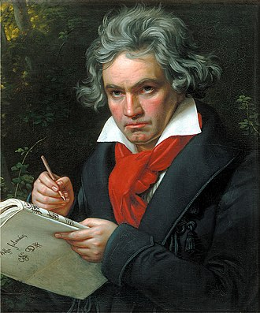
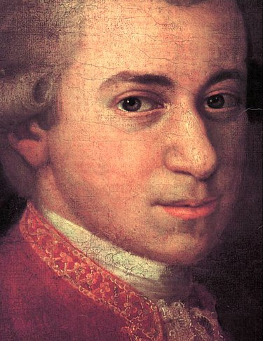

Bach
January 03 2020"Bach" | Classical Composers

Johann Sebastian Bach (21 March 1685 – 28 July 1750) was a German composer and musician of the Baroque period. He is known for instrumental compositions such as the Brandenburg Concertos and the Goldberg Variations, and for vocal music such as the St Matthew Passion and the Mass in B minor. Since the 19th-century Bach Revival he has been generally regarded as one of the greatest composers of all time.
Beethoven
December 19 2019| Classical Composers

Ludwig van Beethoven (baptised 17 December 1770 – 26 March 1827) was a German composer and pianist whose music ranks amongst the most performed of the classical music repertoire; he remains one of the most admired composers in the history of Western music. His works span the transition from the classical period to the romantic era in classical music.
Mozart
November 20 2019 | Classical Composers

Ludwig van Beethoven (baptised 17 December 1770 – 26 March 1827) was a German composer and pianist whose music ranks amongst the most performed of the classical music repertoire; he remains one of the most admired composers in the history of Western music. His works span the transition from the classical period to the romantic era in classical music.